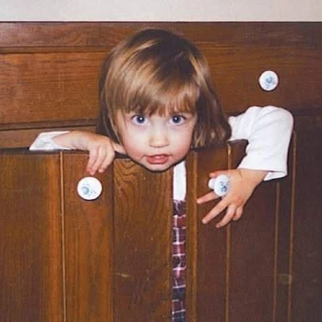

About Kristen
Kristen is a friend, an artist, and a scholar. She's a Pennslyvanian born & raised, the youngest of 3 siblings, and an avid crafter. She holds a B.A. in Political Science and a B.S. in Psychology from the University of Pittsburgh, and she is currently pursuing her PhD in Human Development and Family Sciences at Texas Tech University.
